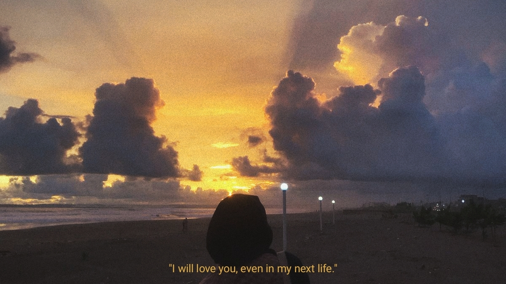

Exclusive Birthday Release • A New Chapter
This album is dedicated to the girl who makes every day feel in my life feels like heaven.
Happy birthday, My Love! Let's make this chapter the best one yet.
Now playing: Selamat Ulang Tahun - Nadien Amizah.